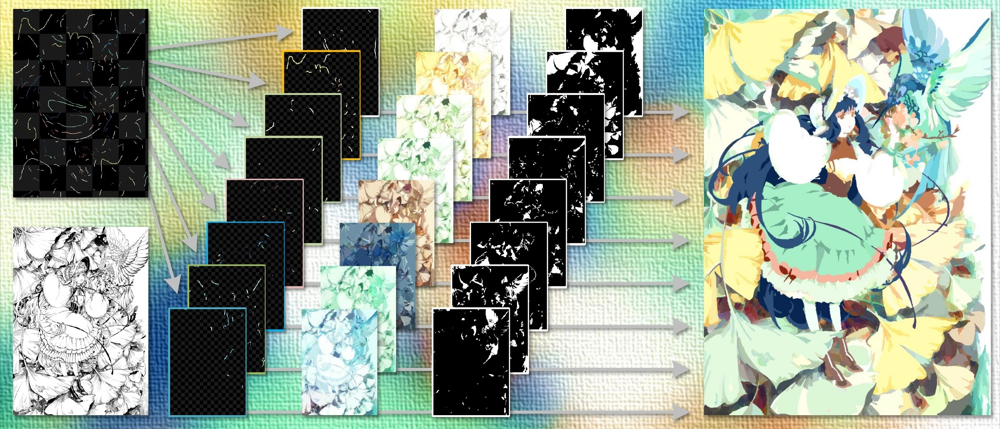

User-Guided Line Art Flat Filling with Split Filling Mechanism
2021 IEEE/CVF Conference on Computer Vision and Pattern Recognition (CVPR)

Split Filling Mechanism (SFM). Given the left line art and some user scribbles, the SFM separate the scribbles into several groups and estimate the influence area of each group to accurately control the colour segmentation. Afterwards, the SFM performs data-driven colourisation in each group to generate visually satisfying colour combinations to assist artists. The outputs are merged together to achieve the right result.
Abstract
Flat filling is a critical step in digital artistic content creation with the objective of filling line arts with flat colours. We present a deep learning framework for user-guided line art flat filling that can compute the "influence areas" of the user colour scribbles, i.e., the areas where the user scribbles should propagate and influence. This framework explicitly controls such scribble influence areas for artists to manipulate the colours of image details and avoid colour leakage/contamination between scribbles, and simultaneously, leverages data-driven colour generation to facilitate content creation. This framework is based on a Split Filling Mechanism (SFM), which first splits the user scribbles into individual groups and then independently processes the colours and influence areas of each group with a Convolutional Neural Network (CNN). Learned from more than a million illustrations, the framework can estimate the scribble influence areas in a content-aware manner, and can smartly generate visually pleasing colours to assist the daily works of artists. We show that our proposed framework is easy to use, allowing even amateurs to obtain professional-quality results on a wide variety of line arts.
Files
See Also
- Supplementary Document - (74.8MB, a PDF file) A document of additional results and engineering details.
Citation
Lvmin Zhang, Chengze Li, Edgar Simo-Serra, Yi Ji, Tien-Tsin Wong, and Chunping Liu.
"User-Guided Line Art Flat Filling with Split Filling Mechanism."
2021 IEEE/CVF Conference on Computer Vision and Pattern Recognition (CVPR), June 2021.
BibTeX
@InProceedings{Filling2021zhang,
author={Lvmin Zhang and Chengze Li and Edgar Simo-Serra and Yi Ji and Tien-Tsin Wong and Chunping Liu},
booktitle={IEEE/CVF Conference on Computer Vision and Pattern Recognition (CVPR)},
title={User-Guided Line Art Flat Filling with Split Filling Mechanism},
year={2021},
}